IN ENGLISH
Vidéo éducationnelle: Télécharger et installer R
A partir de votre navigateur taper R.
> log(5)-2.5^2 [1] -4.640562
<- ou avec =.
c().
PA et ensuite nous affichons le vecteur
numérique PA
> PA = c(112, 121, 165) > PA [1] 112 121 165Remarque: Le [1] est pour indiquer que 112 est la première valeur du vecteur.
> nom = c("Alice", "Robert", Celine")
+
Ici il y a une erreur. Il manque des guillemets en avant de Celine. L'invite n'est pas disponible pour prendre d'autres commandes puisque R croit qu'on n'ait pas fini
d'entrer la commande. On peut arrêter la commande en appuyant sur le bouton stop de la console. On peut rappeler une ancienne commande avec la flèche en haut et fixer l'erreur.
On a ajouter les guillemets.
> nom = c("Alice", "Robert", "Celine")
nom.
> nom [1] "Alice" "Robert" "Celine"
ls() pour donner ou afficher une liste de tous les vecteurs utilisés pendant la session de travail.
> ls() [1] "nom" "PA"
nom.
> rm(nom) > ls() [1] "PA"
NB : Le symbole # est utilisé pour écrire des commentaires avec R. R n'interprète pas les commentaires.
Voici un exemple d'un commentaire :
> # J'étudie la biostatistique
Avec R, le nom de la loi binomiale est binom. Un préfixe d ou p est utilisé avec le nom binom.
dbinom(x, size, prob), où x est une valeur dans l'image de la variable aléatoire, size
est le nombre d'épreuves et prob la probablité du succès.
Exemple: Calculons P(X=20), où Xsuit une loi binomiale avec n=30 et p=0,75.
Solution: On a P(X=20)=0.0909. Voici le calcul avec R.
> dbinom (20, 30, 0.75) [1] 0.09086524Ce n'est pas nécessaire d'indiquer "size=" et "prob=" si on met les arguments dans le bon ordre:
> dbinom(20,30,.75)
[1] 0.09086524
pbinom(x, size, prob), où x est un nombre, size
est le nombre d'épreuves et prob la probablité du succès.
> pbinom(20,30,0.75)
[1] 0.1965934
> dbinom(20:25,30,0.75)
[1] 0.09086524 0.12980749 0.15930919 0.16623567 0.14545621 0.10472847
Mais on veut la somme de ces probabilités, alors on utilise la commande sum:
> sum(dbinom(20:25,30,0.75))
[1] 0.7964023
Alors, P(20 ≤X ≤25)=0,7964.
Commentaire: Une autre façon d'obtenir cette probabilité est d'utiliser la fonction de répartition. On veut P(20 ≤X ≤25)=P(X ≤25)-P(X≤19)=F(25)-F(19)=0,7964. Voici le calcul avec R.
> pbinom(25,30,0.75)- pbinom(19,30,0.75)
[1] 0.7964023
> pnorm(20,25,5.25)
[1] 0.1704519
> pnorm(25,25,5.25) - pnorm(20,25,5.25)
[1] 0.3295481
> qnorm(0.05,25,5.25)
[1] 16.36452
> qnorm(0.25,25,5.25)
[1] 21.45893
> qnorm(0.75,25,5.25)
[1] 28.54107
> qnorm(0.75,25,5.25) - qnorm(0.25,25,5.25)
[1] 7.082142
norm.
On utilise le préfixe p pour la fonction de répartition et le préfixe de q pour obtenir des quantiles.
> x
[1] 12 13 11 9 2 75 125 35
x=c(12, 13, 11, 9, 2, 75, 125, 35)
> length(x)
[1] 8
Notre vecteur numérique a 8 composantes.
> summary(x)
Min. 1st Qu. Median Mean 3rd Qu. Max.
2.00 10.50 12.50 35.25 45.00 125.00
mean(x) # pour la moyenne median(x) # pour la médiane var(x) # pour la variance sd(x) # pour l'écart type IQR(x) # pour la distance interquartile range(x) # pour l'étendue (permet d'afficher le min et le max) range(x)[2] - range(x)[1] # pour la différence entre le max et le min sort(x) # pour ordonner les valeurs en ordre croissant
> quantile(x)
0% 25% 50% 75% 100%
2.0 10.5 12.5 45.0 125.0
Remarques : quantile(x,type=6).
On obtient
> quantile(x,type=6) 0% 25% 50% 75% 100% 2.0 9.5 12.5 65.0 125.0Alors, q1=9,5 et q3=65.
> quantile(x, c(0.05, 0.95)) # pour obtenir le 5ième et le 95ième centile
w.
Avec la fonction c, on peut attribuer des valeurs à w. Ci bas, avec R, nous avons attribué des
valeurs au vecteur numérique w et nous affichons des statistiques descriptives pour w avec la fonction summary.
> w = c(12,25,36,47,23,11,10) > summary(w) Min. 1st Qu. Median Mean 3rd Qu. Max. 10.00 11.50 23.00 23.43 30.50 47.00
## y est une variable numérique y = c(12,45,67,49,29,23,67) boxplot(w,y)Pour soumettre les commandes à la console, on sélectionne les commandes qu'on veut soumettre et on utilise CTRL-R (sur windows) ou CMD-Enter (avec un Mac). Ensuite, quand nous allons dans la console, on voit le résulat:
> ## y est une variable numérique > y = c(12,45,67,49,29,23,67) > boxplot(w,y)R va aussi avoir construit des diagrammes à boite et moustaches comparatifs dans une fenêtre graphique.
file et save as.
Le fichier devrait avoir l'extension (.R). Voici un exemple : RStuff.R read.table pour importer des données à partir d'un fichier texte. R va créer un jeu de données dit dataframe.
donnees.
> donnes = read.table(file.choose(), header=TRUE, sep="\t")
N.B. : donnes est le nom que nous avons donné au jeu de données.
Arguments:
file.choose() : Avec cet argument, R va ouvrir une fenêtre pour nous permettre de trouver notre fichier.
header=TRUE: Par défaut, R suppose que nous n'avons pas donné de noms aux colonnes. C'est-à-dire que la premier unité statistique dans la première rangé.
Mais, nous préférons donner des noms aux colonnes. Pour donner des noms aux colonnes, on met les noms des colonnes dans la première rangé du fichier. Alors, cet argument indique à R que la première rangé
contient les noms des colonnes.
sep="\t": Par défaut, R utilise des espaces pour délimiter les colonnes. Nous avons utiliser des tabulations pour délimiter les colonnes, alors on indique ceci avec l'argument
sep="\t".
données est un data frame.
> is.data.frame(donnees) [1] TRUER affiche TRUE, alors
donnees est un data frame, c.-à-d. un tableau où les unités statistiques sont dans les rangés et les variables sont dans les colonnes.
names pour afficher les noms des colonnes. Ci-bas, on affiche les noms des colonnes pour le dataframe donnees :
> names(donnees) [1] "Fille" "Mere"On observe deux colonnes nommées : "Fille" et "Mere".
donnees :
> donnees$Fille [1] 160 165 156 169 152 156 162 156 161 160 164 162On peut aussi référer à la colonne en utilisant son indice au lieu de son nom.
> donnees[,1] [1] 160 165 156 169 152 156 162 156 161 160 164 162On utilise des paranthèses carrées pour utiliser des indices. Ici nous avons utiliser
[,1] pour obtenir toutes les rangés, mais seulement la première colonne. Ci-bas, on affiche la deuxième colonne du donnees
> donnees[,2] [1] 163 165 162 161 161 160 164 159 164 161 163 168La deuxième colonne est appelée "Mere", donc ici, nous utilisons le nom pour accéder à la 2ème colonne :
> donnees$Mere [1] 163 165 162 161 161 160 164 159 164 161 163 168
summary pour afficher quelques statistiques descriptives pour la taille des mères (en cm).
> summary(donnees$Mere) Min. 1st Qu. Median Mean 3rd Qu. Max. 159.0 161.0 162.5 162.6 164.0 168.0Ici nous utilisons la fonction
boxplot pour afficher des diagrammes à boites et moustaches comparatifs des tailles des mères et des tailles des filles.
> boxplot(donnees$Mere,donnees$Fille,names=c("Mères","Filles"))
Voici le diagramme :
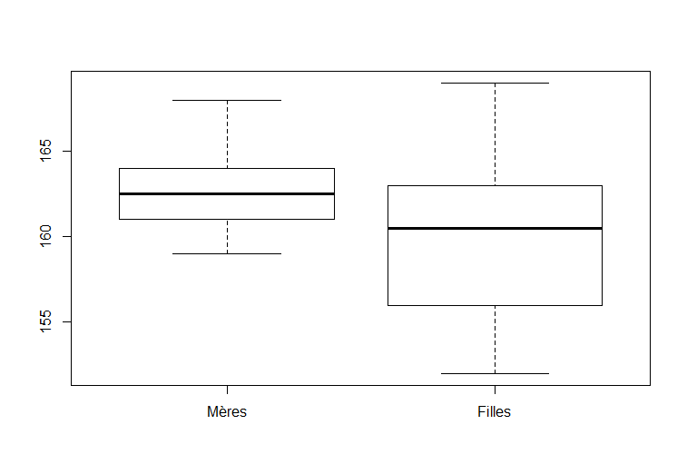
read.table pour importer les données du fichier texte. Ceci va créer un dataframe (jeu de données) avec R.
Dans l'exemple suivant, nous importons des données du fichier suivant : laitue.txt.
> laitue = read.table(file.choose(), header=TRUE, sep="\t")On nomme le jeu de données
laitue.
> names(laitue) [1] "masse.sec" "en.concurrence"Il y a deux colonnes. En outre, remarquons que R a mis un point dans le nom "masse.sec". R va substituer des symboles (comme l'espace) qui ne sont pas permis dans le noms des variables par un point.
> mean(laitue$masse.sec) [1] 2.750667Nous avons deux groupes de laitues, les laitues en compétition avec l'épinard et les laitues qui ne sont pas en compétition. On calcul la moyenne de la masse sèche pour chaque groupe avec la fonction
aggregate et une notation de formule.
> aggregate(masse.sec~en.concurrence, laitue,mean) en.concurrence masse.sec 1 non 3.020 2 oui 2.212
laitue.
mean avec R) pour chaque groupe.
> aggregate(masse.sec~en.concurrence, laitue,sd) en.concurrence masse.sec 1 non 0.9350325 2 oui 0.7774531
en.concurrence.
> levels(laitue$en.concurrence) [1] "non" "oui"Nous allons calculer la moyenne de la masse sèche des laitues en compétition, c'est-à-dire pour le groupe "oui". En utilisant les parenthèses carrées, on demande à R de vérifier pour chaque rangé si la condition dans la parenthèse est satisfaite. Si la condition n'est pas satisfaite, alors R ignore cette rangé.
> mean(laitue$masse.sec[laitue$en.concurrence=="oui"]) [1] 2.212On peut aussi utiliser la notation de formule avec la fonction
boxplot.
> boxplot(masse.sec~en.concurrence,laitue)La commande ci-haut produit des diagrammes à boites et moustaches comparatifs pour la masse sèche selon le niveau de la concurrence. Voici le diagramme :
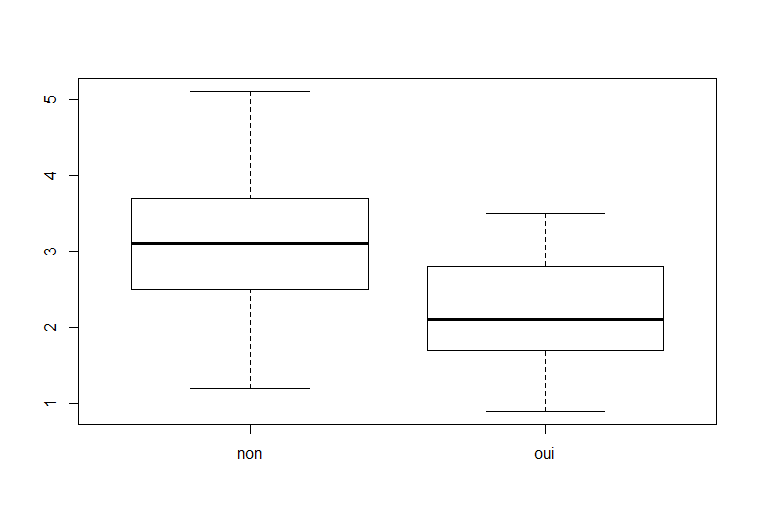
Mots clés : read.table, indices, boxplot, summary, aggregate
x est un vecteur numérique. Pour construire un histogramme de x, on utilise la commande hist(x) et pour un diagramme
à boite et moustaches, on utilise la commandes boxplot(x).
read.table.
> donnees = read.table(file.choose(),header=TRUE,sep="\t") > names(donnees) [1] "Temps.de.survie..en.mois."Remarques:
donnees et le jeu de données contient
une colonne qui est nommée "Temps.de.survie..en.mois.".
donnees$Temps.de.survie..en.mois.
> ncol(donnees) [1] 1 > nrow(donnees) [1] 250Alors, le jeu de donnees a une colonne et 250 rangés (pour les 250 patients).
> hist(donnees$Temps.de.survie..en.mois.)Voici le résultat.
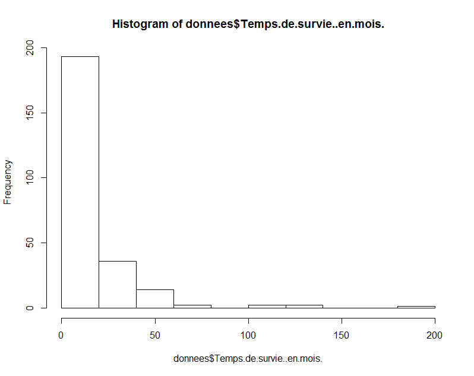
hist(donnees$Temps.de.survie..en.mois.,ylab="Fréquence", xlab="Temps de survie (en mois)",main="Histogramme du temps de survie")Voici le résultat.
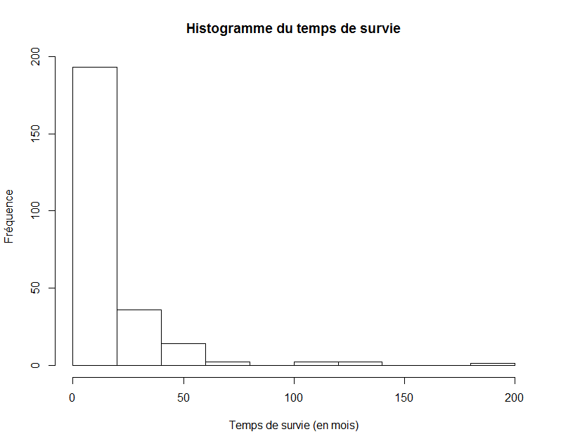
boxplot. Considérons la commande suivante :
> boxplot(donnees$Temps.de.survie..en.mois.,ylab="Temps de survie (en mois)")Voici le résultat.
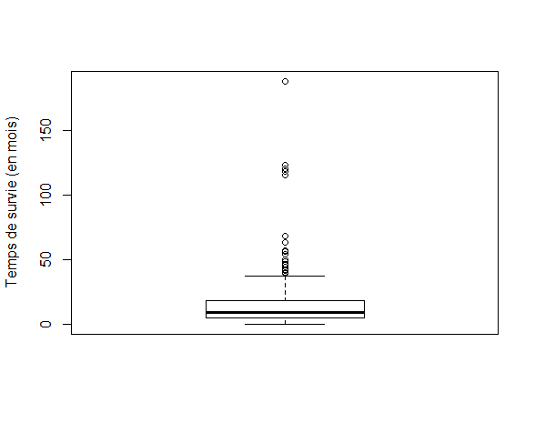
> source(file.choose())R va ouvrir une fenêtre et sélectionner le fichier
plots.r. Pour vérifier que vous avez bien ouvert le fichier, considérer la commande suivante:
> BoxPlot
function(x, ...) UseMethod("BoxPlot")
Si vous voyez function(x, ...) UseMethod("BoxPlot"), après avoir entrer BoxPlot à l'invite, alors vous avez accès à la fonction BoxPlot. On utilise
la fonction BoxPlot comme la fonction boxplot. Mais, BoxPlot utilise des quantiles de type 6.
> x=c(12,13,24,56,100,45,67,45,34,23) > y=c(11,14,24,57,115,65,67,45,34,24) > z=c(12,34,56,34,99,98,65,34,23,11,10,9,23,65)Nous utilisons des diagrammes à boite et moustaches comparatifs avec la fonction
boxplot.
> boxplot(x,y,z)Remarque: R va nommer les groupes 1, 2, et 3, respectivement. Nous allons modifier les noms des groupes avec l'argument
names. On peut aussi donner une étiquette à l'axe vecticale en utilisant l'argument ylab.
Voici la commande que nous avons utiliser pour construire le diagramme ci bas.
boxplot(x,y,z,names=c("Groupe 1","Groupe 2","Groupe 3"), ylab="Taille (en cm)")
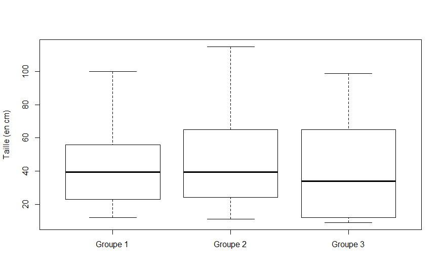
> source(file.choose())R va ouvrir une fenêtre et nous allons sélectionner le fichier
plots.r. Pour vérifier que nous avons bien importer le fichier,
utilisez la commande suivante :
> BoxPlot
function(x, ...) UseMethod("BoxPlot")
Si vous voyez function(x, ...) UseMethod("BoxPlot"), après avoir soumis la commande BoxPlot à l'invite, alors,
vous avez maintenant accès à la fonction BoxPlot.
On peut utiliser BoxPlot exactement comme la fonction boxplot. Mais, BoxPlot utilise les quantiles de type 6.
read.table.
> donnees = read.table(file.choose(),header=TRUE,sep="\t")Remarques:
> nrow(donnees) [1] 365
header=TRUE est utilisé pour indiquer à R que dans la première rangé du fichier, nous avons les noms des colonnes. On utilise
names pour afficher les noms des colonnes.
> names(donnees) [1] "Avg.Temp...C." "Avg.Temp...F." "Avg.Wind..mph." "Precip..in." "Day" "Month" [7] "Season"On observe 7 colonnes.
y et un vecteur catégorique x (pour identifier les groupes) dans le jeu de données
donnees. Pour construire des diagrammes à boîte et moustaches comparatifs pour y selon les niveaux de x, on utilise
boxplot(y~x,donnees)
boxplot(Avg.Wind..mph.~Month,donnees)On ajoute des étiquettes aux axes avec
ylab et xlab. Voici la commande et le diagramme correspondant.
BoxPlot(Avg.Wind..mph.~Month,donnees,ylab="Vitesse moyenne du vent (en mph)",xlab="Mois")
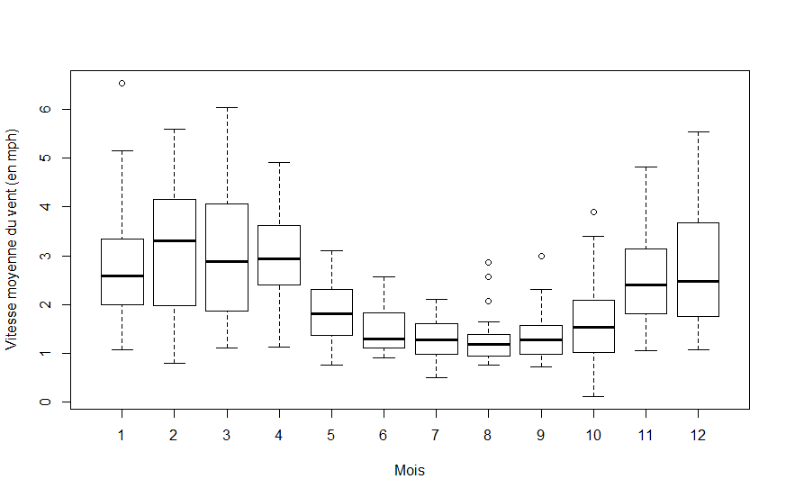
plots.r, avec la commande source(file.choose()), alors nous pouvons utiliser
la fonction BoxPlot de la même façon que la fonction boxplot sauf que les quartiles sont des quantiles de type 6.
BoxPlot(Avg.Wind..mph.~Month,data,ylab="Average Wind Speed (in mph)",xlab="Month")
x=c(15.0, 15.3, 16.1, 5.4, 14.7, 14.7, 14.6, 13.8, 14.0, 14.6, 16.3, 18.6, 15.3, 15.3, 15.7, 10.7, 12.9, 15.3, 13.7, 14.1, 13.7,14.8, 16.8, 16.2, 16.0) y=c(11.7, 9.4, 11.0, 9.6, 6.2, 7.4, 12.6,8.2, 9.1, 9.7, 9.6, 11.6, 9.5, 12.1,10.2, 6.1, 11.8, 9.6, 7.4, 10.4) w=c(30.1, 30.1, 37.8, 38.3, 34.5, 31.9, 41.2,30.3, 30.0, 30.1, 34.7, 30.8, 30.7, 33.4,30.7, 30.2, 34.0, 33.7, 31.9, 30.7)
qqnorm pour constuire un diagramme quantile-quantile pour vérifier la normalité.
Les commandes suivantes nous donne un diagramme quantile-quantile pour y et superimpose une droite sur le diagramme. L'ordonnée à l'origine de la droite
est la moyenne et la pente est l'écart type.
> qqnorm(y) > abline(mean(y),sd(y))Voici le diagramme quantile-quantile correspondant. Il y a une tendance linéaire dans le diagramme avec un petit écart aux extrémités. Alors, c'est raisonnable de supposer que c'est un échantillon d'une population normale.
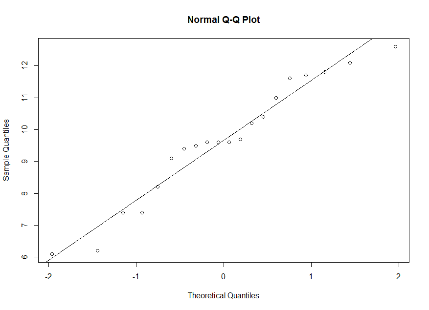
> summary(y) Min. 1st Qu. Median Mean 3rd Qu. Max. 6.100 8.875 9.600 9.660 11.150 12.600Le 50ième centile de l'échantillon est 9,66. Mais le 50ième centile pour une variable normale centrée et réduite est z=0. Alors, on fait une correspondance entre 9,66 sur l'axe verticale et 0 sur l'axe horizontale. Le 25ième centile de l'échantillon est 8,875. Mais le 25ième centile pour une variable normale centrée et réduite est z=-0,674. Alors, on fait une correspondance entre 8,875 sur l'axe verticale et -0,674 sur l'axe horizontale. Et ainsi de suite.
> qnorm(0.25,0,1) [1] -0.6744898
x.
On observe une déviation de la droite. Alors, ce n'est pas raisonnable de supposer que x est un échantillon
aléatoire d'une population normale.
> qqnorm(x) > abline(mean(x),sd(x))
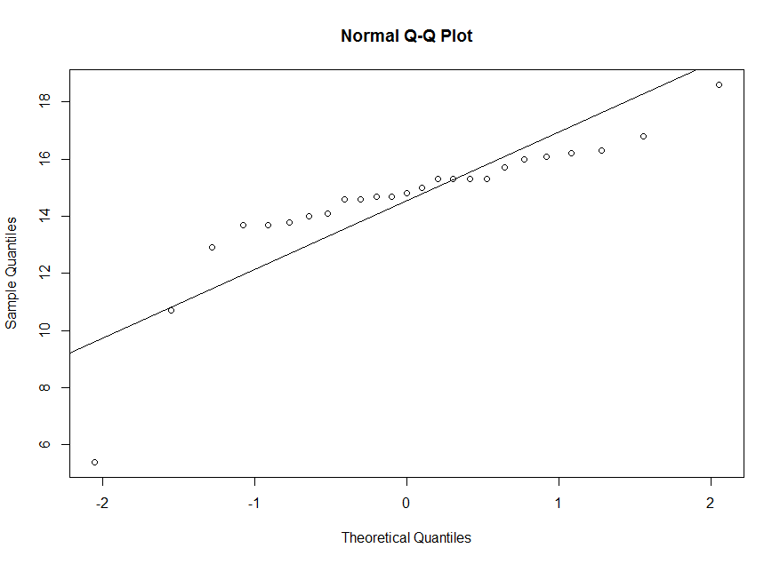
w.
On observe une tendance curviligne dans le diagramme. Alors, ce n'est pas raisonnable de supposer que
w est un échantillon d'une population normale.
> qqnorm(w) > abline(mean(w),sd(w))
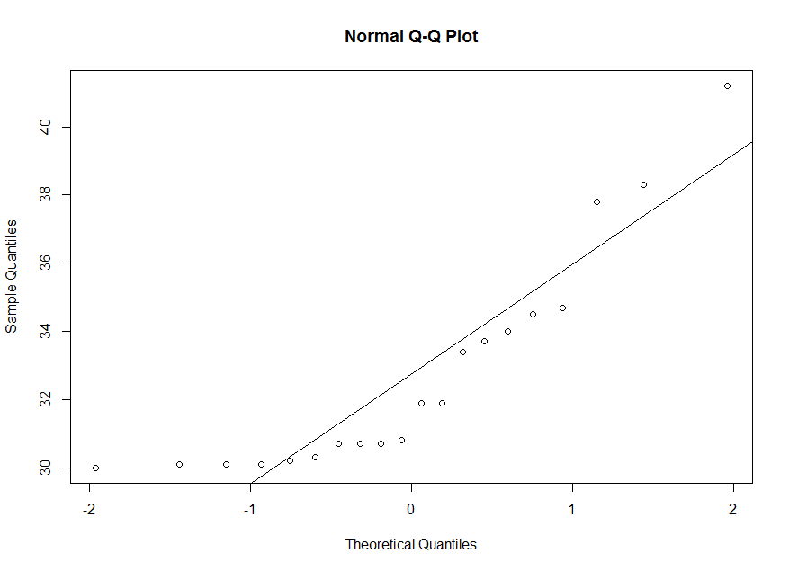
w a une très grande asymétrie positive.
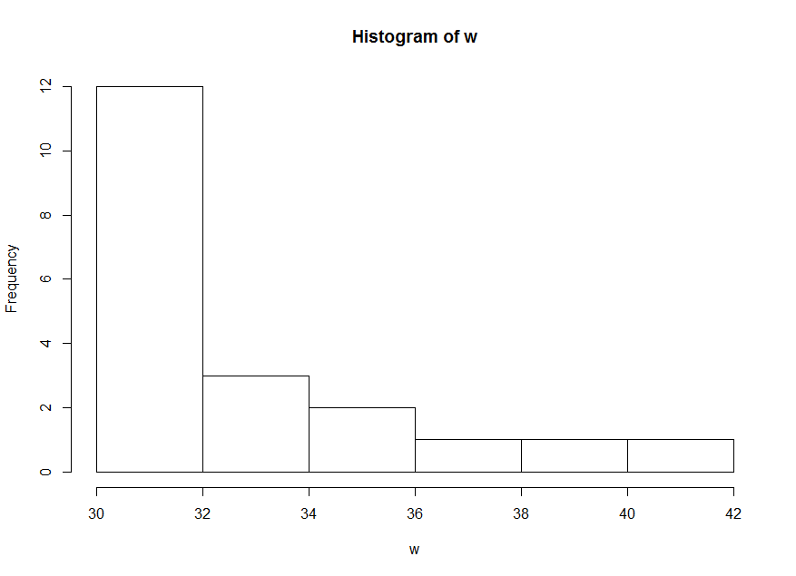
donneeset nous affichons les noms des colonnnes. Il y a trois colonnes. La première est une variable d'identification du patient. Les deux autres sont des scores de douleurs pour le patient sous le placébo et sous la méthadone. Alors, chaque patient a deux scores de douleurs. On calcul la différence entre les deux scores de douleurs et on produit un diagramme quantile-quantile pour cette différence.
> donnees=read.table(file.choose(),header=TRUE,sep="\t") > names(donnees) [1] "patient" "placebo" "methadone" > d=donnees$placebo-donnees$methadone > qqnorm(d) > abline(mean(d),sd(d))Voici le diagramme quantile-quantile pour la différence des scores de douleurs. Il y a une tendance linéaire dans le diagramme. Alors, c'est raisonnable de supposer que la différence entre les scores de douleurs est normalement distribuée.
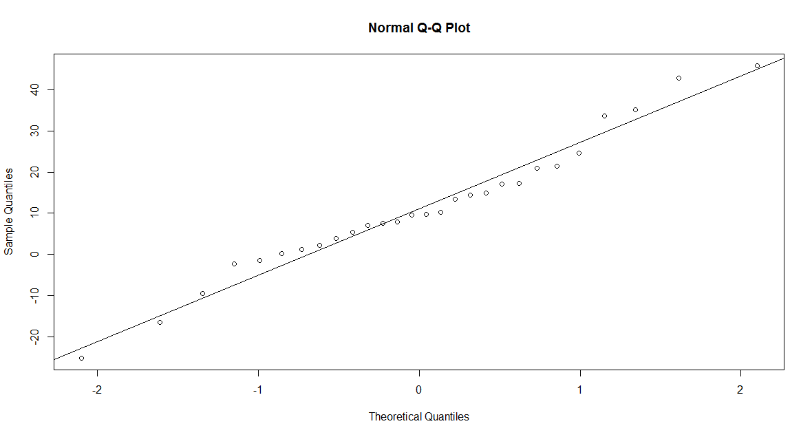
ppnorm.
plots.ret vérifier que le fichier fut bien importé en utilisant la commande
ppnorm.
> source(file.choose())
> ppnorm
function(x, ...) UseMethod("ppnorm")
Remarque : Si nous avons bien importé le fichier plots.r, alors
on devrait voir function(x, ...) UseMethod("ppnorm"), après avoir entrer la commande ppnormà l'invite. L'utilisation de la fonction est
ppnorm(x), où x est un vecteur numérique.
x, y et w. Le diagramme à probabilité à l'échelle normale est semblable
au diagramme quantile-quantile, mais les quantiles de l'échantillon sont à l'axe horizontale et les quantiles théoriques sont à l'axe verticale (en outre on affiche
la probabilité au lieu de la valeur du z, on a 50% à z=0 et 95% à z=1,645). Alors, les diagrammes sont équivalents. Mais la droite superimposée utilise -(moyenne/écart type)
pour l'ordonnée à l'origine et 1/(écart type) pour la pente.
> ppnorm(x)
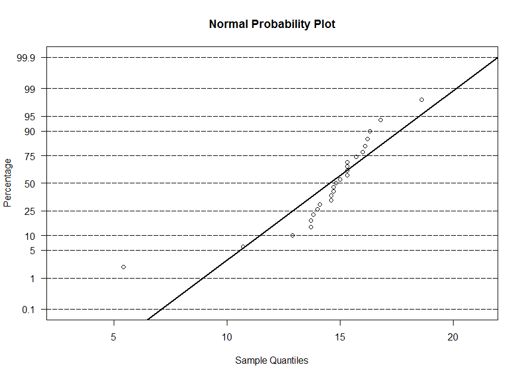
> ppnorm(y)
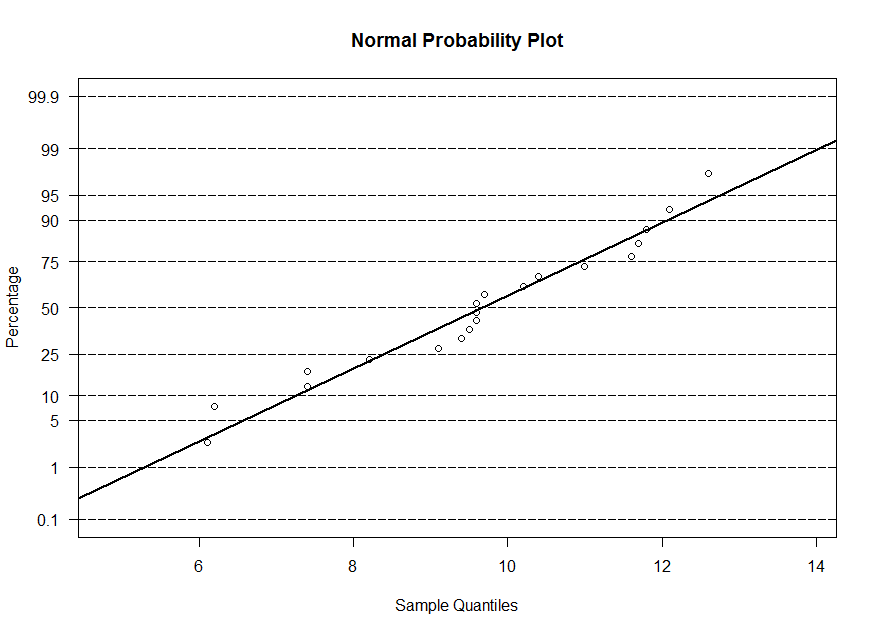
> ppnorm(w)
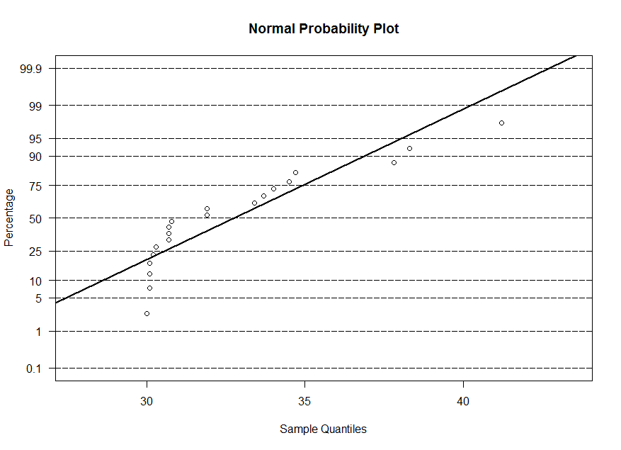
x1 and x2. We will
use the t.test to test the equality of means. Its usage is
t.test(x1,x2)Remarks:
alternative="greater"
alternative="less"